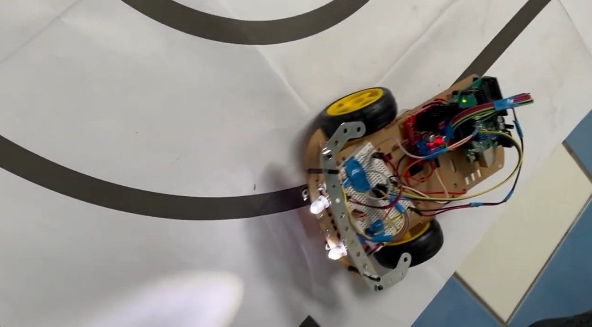
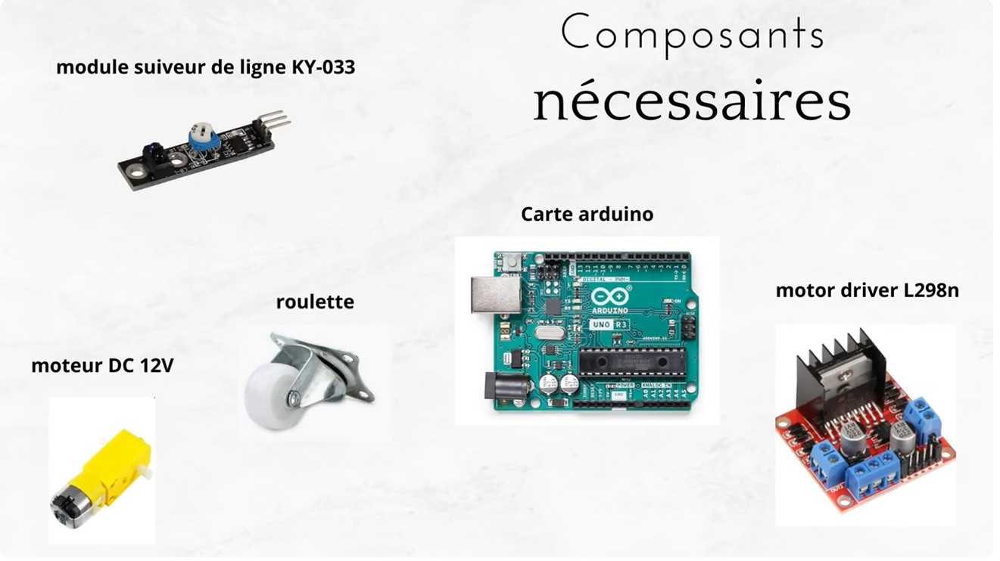
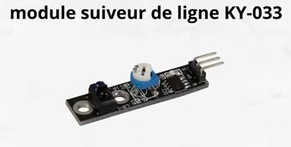
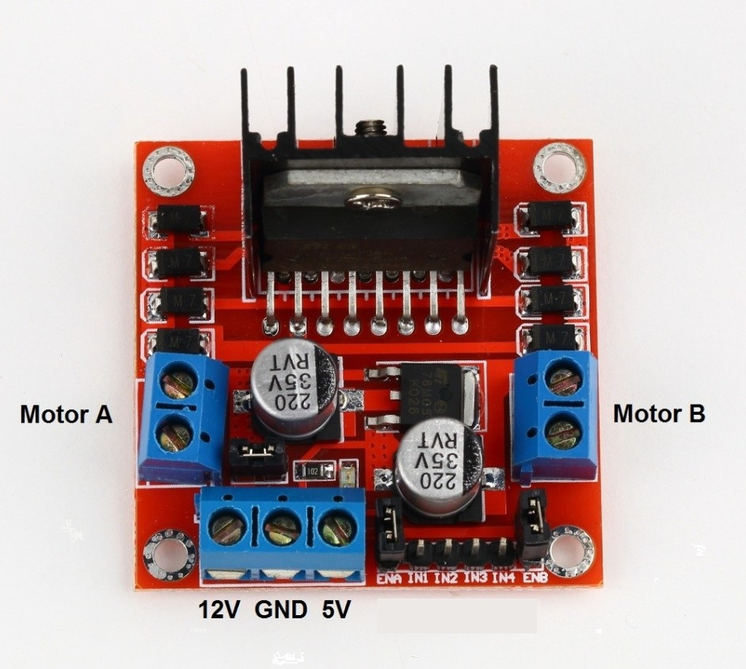
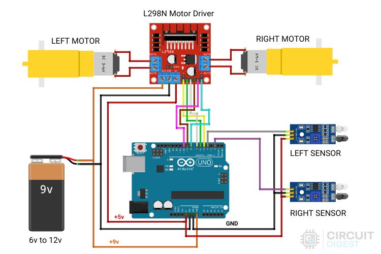

Le robot suiveur de ligne
Un robot suiveur de ligne, c’est un petit robot capable de repérer une ligne tracée au sol et de la suivre en toute autonomie. Grâce à ses capteurs, il détecte le contraste entre la ligne et le sol, puis ajuste sa trajectoire en temps réel.
C’est un robot simple, mais parfait pour comprendre comment une machine peut “voir”, réagir et se déplacer de manière autonome. Simple en apparence, il y a pourtant plusieurs notions à connaître avant de réaliser ce projet.

Les composants utilisés :
Pour ce projet, j'ai choisi d'utiliser le module suiveur de ligne KY-033. Le principe est simple : grâce à une LED infrarouge et à un récepteur, il est capable de repérer la différence entre une surface claire et une surface foncée. Pour que ce capteur soit efficace, il est impératif de le calibrer.
Pour cela, il vous faut tourner le potentiomètre situé au-dessus du module. Faites des tests en utilisant une feuille foncée ou claire pour affiner la calibration.
Cela lui permet de “voir” la ligne noire tracée au sol et d’aider le robot à garder sa trajectoire.

Le module KY-033
Le KY-033 envoie une lumière infrarouge vers le sol, puis mesure la quantité de lumière renvoyée :
Une surface claire renvoie beaucoup de lumière → le capteur voit du “blanc”.
Une surface foncée, comme une ligne noire, renvoie très peu de lumière → le capteur détecte la “ligne”.
En fonction de ce qu’il détecte, il envoie un simple signal à la carte (Arduino, ESP32, etc.) pour dire :
➡️ "Je suis sur la ligne"
➡️ "Je ne suis plus dessus"
C’est ensuite grâce au programme que nous pourrons interpréter les données des capteurs et ainsi corriger la trajectoire du robot.

La carte Arduino Uno
L’Arduino Uno repose sur un microcontrôleur ATmega328P, chargé d’exécuter les instructions que vous lui programmez depuis l’IDE Arduino. Concrètement, c’est une petite carte capable de lire des signaux provenant de capteurs et piloter des actionneurs comme des moteurs, des LEDs ou des servomoteurs.
Elle offre ainsi une interface simple pour transformer un programme informatique en actions physiques.

L’Uno met à disposition un ensemble de broches et de fonctionnalités très utiles pour le prototypage :
- 14 broches numériques (dont 6 utilisables en PWM)
- 6 entrées analogiques
- Un port USB Type-B pour la programmation et l’alimentation
- Une entrée d’alimentation externe (7 à 12 V)
- Un régulateur intégré fournissant du 5V et du 3,3V
- Un oscillateur 16 MHz assurant une bonne stabilité du microcontrôleur
C'est une carte polyvalente qui permet de programmer différents composants afin de réaliser des circuits plus ou moins complexes comme des petits robots.
Le pont en H L298N
Le L298N est un pont en H, il permet de contrôler des moteurs à courant continu (DC) et des moteurs pas à pas. Il permet de piloter la vitesse et le sens de rotation des moteurs à partir d’un microcontrôleur, par exemple l'Arduino Uno.

Le module utilise un composant L298N intégré, capable de gérer deux moteurs indépendants. Chaque moteur est contrôlé par deux entrées qui déterminent le sens de rotation. On peut contrôler la vitesse avec un signal PWM (modulation de largeur d’impulsion).
Câblage du circuit :

Source: www.raspberryme.com
Vidéo du robot